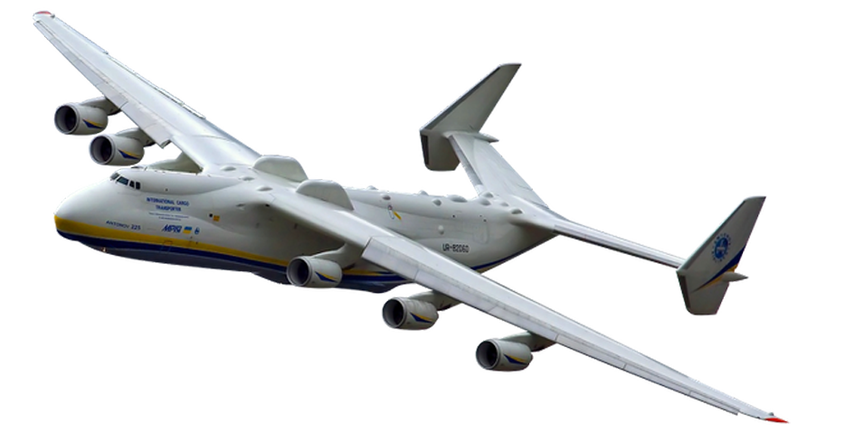

Київ - це...
Київ – одне з найстаріших міст Європи, засноване щонайменше 1500 років тому.
Сучасне європейське місто здатне здивувати будь-кого – від любителів природної краси, архітектури та
визначних пам'яток до тих, хто віддає перевагу більш насиченому та активному відпочинку.
Київ побудовано на схилах живописної річки Дніпро, що дає можливість милуватися неповторними
панорамами мегаполісу.
Історична спадщина
Києво-Печерська лавра заснована у XI ст. Розташована на схилах Дніпра, вона є одним із
найбільш впізнаваних символів столиці України. Сюди приїздять тисячі віруючих людей та
паломників, також це улюблене місце для цікавих прогулянок, куди люблять завітати не лише
гості Києва, але й його мешканці.
Київ гастрономічний
Божественні страви і напої національної української кухні –
пиріжки у старовинній пекарні, 8 видів котлети по-київськи, різні види сала, крученики,
вареники, борщ, київські цукати, ну і звісно, знаменитий Київський торт. На вас очікують
кулінарні майстер-класи, екскурсії гастрономічними місцями, вулична їжа і дегустація
неймовірно смачних настоянок.
Літак Мрія

Розмах крила, становить 88,4 метра.
Максимальна вага для зльоту – 600 тонн
Ан-225 є найбільшим літаком у світі, що володіє самою високою вантажопідйомністю. Це реактивне
транспортне повітряне судно. Розроблялося в Україні, дослідно-конструкторським бюро імені О. К.
Антонова. Метою побудови такого літака, було транспортування в повітрі космічних човників на
космодром для їх подальшого запуску. Із-за великих розмірів човників, розмістити їх усередині літака
небуло можливим. Конструктори прийшли до рішення розмістити їх на поверхні повітряного судна за
допомогою спеціального кріплення. Для цього довелося повністю змінити будову хвостової частині
літака. Так і з'явився Ан-225.